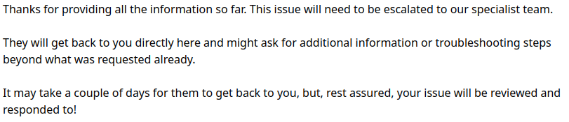

Kirjutusploki hall tekst jäi kopeerimisel välja
Kirjutusplokis ei saanud halli teksti valida ega muuta. Ka nupp Copy jättis selle osa kopeeritud tekstist välja.
Kell 04.25 saabunud vastuses kirjutas OpenAI tugi, et juhtum vajab spetsialistide ülevaatust ja nad vastavad kasutajale. Uut katset kohe ei palutud. Paranduse kohta kinnitust polnud.
